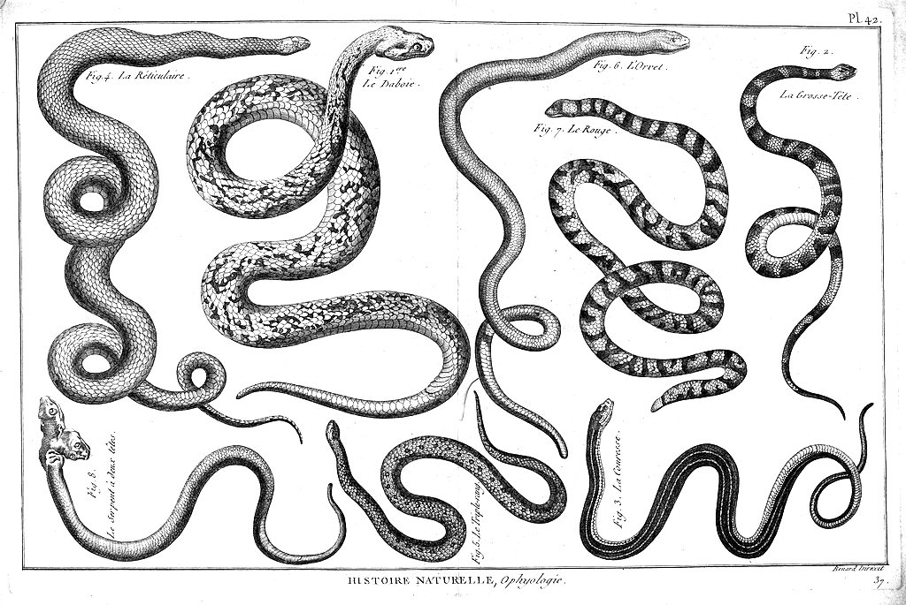

Python from scratch
Seven short lessons for people who have never programmed. The code runs right on this page: press “Run”, change the code and run it again. Don't be afraid of mistakes, nothing will break.
On the first run the browser loads Python, which takes a few seconds. Unfamiliar words are in the glossary (in Russian for now).
0 of 7 lessons done

-
Lesson 1. Your first program
A program is a list of commands for the computer. It carries them out one after another, from top to bottom.
The
printcommand shows text on the screen. The text itself always goes in quotes.Try it: write your name in quotes and press “Run”.
Your programprint("Hello!") print("This is my first program") -
Lesson 2. Variables: how to remember a value
A variable is a label on a box. You put a value in the box and then refer to it by name.
You can work with values: for example, add one to an age.
Try it: put in your own name and age and run it again.
Your programname = "Anna" age = 18 print("My name is", name) print("Next year I will be", age + 1) -
Lesson 3. Conditions: if this, then that
A program can make choices. The word
ifmeans “if”, andelsemeans “otherwise”.An indent of four spaces shows which lines belong to the condition.
Try it: change the temperature to 10 and see what changes.
Your programtemperature = -5 if temperature < 0: print("It's freezing outside, put on a hat") else: print("You can go without a hat") -
Lesson 4. Lists and loops: one action many times
A list keeps several values in a row. A
forloop takes them one at a time and does the same thing with each of them.That's how a website shows a feed: it has a list of posts and shows them one after another.
Try it: add your own task to the list.
Your programtasks = ["buy bread", "do homework", "call mum"] for task in tasks: print("To do:", task) print("Tasks in total:", len(tasks)) -
Lesson 5. Functions: your own command
A function is your own command. You describe it once and call it as many times as you like.
The word
defstarts the description, andreturnsays what the function gives back.Try it: call the function once more with a different name.
Your programdef greet(name): return "Hello, " + name + "!" print(greet("Anna")) print(greet("Marat")) -
Lesson 6. Dictionaries: find a value by its name
A dictionary keeps “name and value” pairs, like a price list in a shop. You find a value by its name, not by its number.
Websites use this all the time: for example, to find a page by its address.
Try it: add your own product with a price.
Your programprices = {"bread": 200, "milk": 450} print("Bread costs", prices["bread"], "tenge") prices["cheese"] = 1500 print(prices) -
Lesson 7. How this connects to websites
You already know enough to understand the main idea. The address in the browser picks a function, and the function returns a page.
Below is a tiny website built from what you have just learned: functions and a dictionary.
The second example does the same with Flask. It is a ready-made tool for websites: the line
@app.routesays which address opens this function.Try it: change the address to "/" and run it again.
A site made of functions and a dictionarydef home(): return "Home page" def contacts(): return "Our contacts" pages = {"/": home, "/contacts": contacts} address = "/contacts" print("You opened:", address) print("The site replied:", pages[address]())The same with Flaskfrom flask import Flask app = Flask(__name__) @app.route("/") def home(): return "Home page" print("The site replied:", app.test_client().get("/").text)
What's next
Now you understand the basics. Next you will see how a request travels through a real server and build your first website. These sections are in Russian for now.